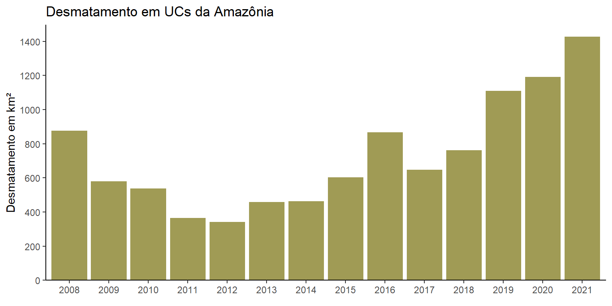

Desmatamento em Unidades de Conservação da Amazônia
A 1ª versão desse relatório foi feita como trabalho final do curso “R para Ciência de Dados 1”, da Curso-R, em outubro de 2021 e está disponível para acesso nesse link. Essa versão consiste no trabalho final do curso “Relatórios Automáticos”, também da Curso-R.
Contexto
As áreas protegidas possuem um papel amplamente reconhecido na conservação da biodiversidade. No bioma amazônico, são encontradas principalmente duas estratégias de proteção: as unidades de conservação e as terras indígenas. As primeiras serão o objeto dessa análise, cujo objetivo é avaliar o comportamento do desmatamento nessas áreas de 2008 a 2021.
Para isso, foram utilizados dados gerados pelo INPE - Instituto Nacional de Pesquisas Espaciais e disponibilizados no portal TerraBrasilis, junto aos dados do Cadastro Nacional de Unidades de Conservação.
Resultados
Assim como ocorreu para o bioma como um todo, o desmatamento nas unidades de conservação (UCs) aumentou nos últimos anos, como visto na figura abaixo. Em 2021 foi registrado o maior valor dos últimos 13 anos: 1.426,92 km², o que representa um aumento de 20% em relação ao ano anterior, que já havia sido um recorde histórico.

As UCs do estado do Pará apresentaram a maior média de desmatamento nos últimos 4 anos, chegando a 132 km² por unidade de conservação no ano de 2021. O Pará também é campeão em perda de floresta fora de áreas protegidas, segundo dados do INPE. Outro estado que apresentou um aumento significativo foi o Acre, que quase quadruplicou seu desmatamento médio de 2018 para 2019, chegando a 88 km²/unidade no ano de 2021.

As UCs estaduais são, em média, as mais afetadas pelo desmatamento. Em 2021, elas apresentaram quase o dobro do desmatamento registrado nas unidades federais, o que pode ser um reflexo da menor capacidade de proteção e fiscalização dos órgãos estaduais. Ainda assim, ambas as esferas de gestão seguiram o padrão de aumento no desmatamento a partir de 2018.
As UCs da categoria Área de Proteção Ambiental (APA) foram as mais desmatadas, em média, no período crítico dos últimos 4 anos, seguidas pelas Florestas e Reservas Extrativistas. As três categorias representam unidades de uso sustentável, isto é, nas quais é permitido uso indireto de recursos com o objetivo de compatibilizar a conservação da natureza com o desenvolvimento sustentável. As APAs, especificamente, apresentam maior flexibilidade nos usos permitidos, além de geralmente abrangerem espaços territoriais maiores e mais diversos, que podem incluir também contextos socioeconômicos muito distintos. Essas características tornam sua gestão particularmente desafiadora e pode estar associada à maior dificuldade de proteção. Em relação às demais categorias de uso sustentável, o aumento pode estar associado ao incentivo à invasão de territórios de comunidades tradicionais que permeia o discurso político dos últimos anos, porém uma análise mais profunda seria necessária para enriquecer a discussão.
De forma individualizada, o desmatamento varia muito entre as UCs, com destaque para o fato de que apenas
Reading layer `shape_desmatamento' from data source
`D:\2. Material R\Curso Relatórios Automáticos\trabalhoCursoRelatorios\data\shape_desmatamento.shp'
using driver `ESRI Shapefile'
Simple feature collection with 351 features and 2 fields
Geometry type: MULTIPOLYGON
Dimension: XY
Bounding box: xmin: -73.99068 ymin: -18.01998 xmax: -44 ymax: 5.272225
Geodetic CRS: SIRGAS 2000Reading layer `shape_estados' from data source
`D:\2. Material R\Curso Relatórios Automáticos\trabalhoCursoRelatorios\data\shape_estados.shp'
using driver `ESRI Shapefile'
Simple feature collection with 13 features and 5 fields
Geometry type: MULTIPOLYGON
Dimension: XY
Bounding box: xmin: -73.99045 ymin: -18.04177 xmax: -44 ymax: 5.271841
Geodetic CRS: SIRGAS 2000
Considerações Finais
Entendendo o contexto de ameaça e o nível de impacto que atinge as áreas protegidas, é possível estabelecer ações prioritárias de monitoramento e proteção, garantindo que o apoio fornecido atenda às necessidades mais urgentes daquela área. Vale dizer ainda que o desmatamento é um dentre outros fatores que ameaçam a conservação do bioma amazônico, logo é essencial uma análise integrada para melhor tomada de decisão.